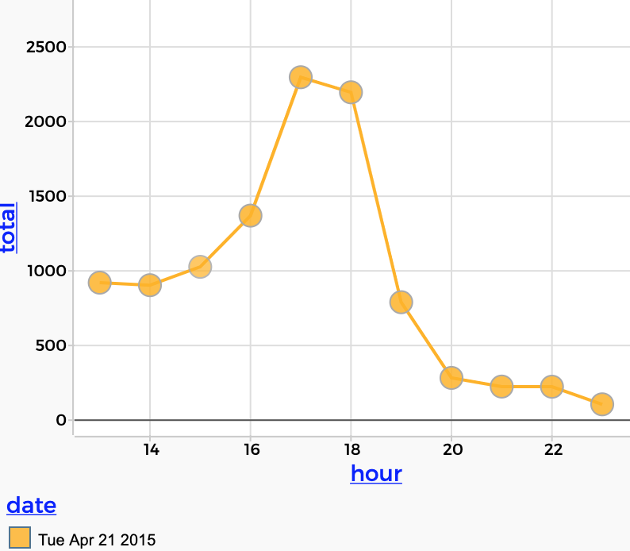
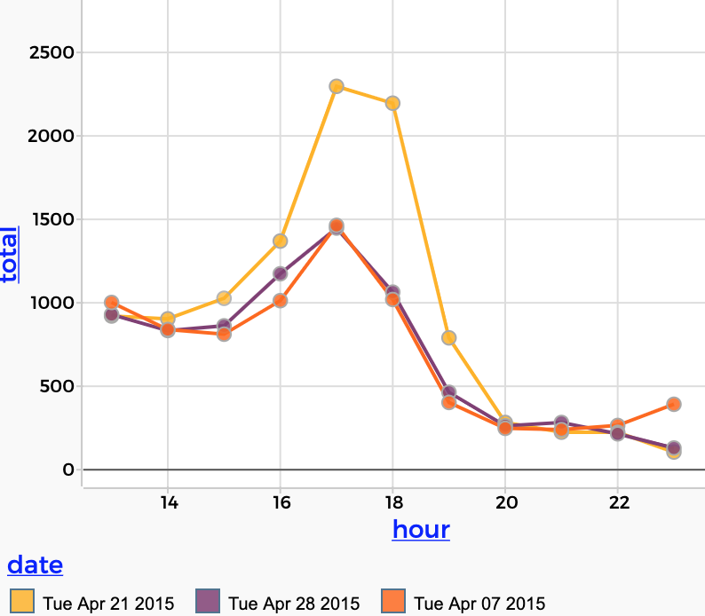

9 The BART Data Portal
This chapter describes a very cool portal to a huge dataset about BART, the Bay Area Rapid Transit district, the “metro” in the San Francisco Bay Area. It has information about ridership for (at least) four years, 2015–2018. We will try to expand it as time allows; when we get that data, the Coronavirus era will be quite dramatic.
If you are not from that area, we apologize and note that it would be great to have similar data for other transit systems. Anyone with the data and/or funds to make that work possible is encouraged to contribute!
The basic idea is this: the BART system has about fifty stations and operates for 19-ish hours per day. On a normal day, there are more than 400,000 trips. The system records when and where each passenger got on and off.
Our dataset lists, for every station pair (e.g., Embarcadero and Orinda), how many riders got on at Embarcadero and got off at Orinda, during each hour that BART was operating.
9.1 The basics
The data portal—the thing you interact with—lets you specify the stations and the day and hour. You will press a button to get the data, and it will be sent directly into CODAP so you can analyze it
Try this in the live illustration below:
- Look at the panel; notice what day we’re looking at and what stations (Orinda and Embarcadero) we have specified by default.
- Press the get data button. A table will appear with data.
- Make a graph. Put
whenon the horizontal axis andriderson the vertical. - Now: Orinda is a suburb. Embarcadero is in downtown San Francisco. What’s going on in the graph?
Here are more things to do. This will further orient you to the data and its possibilities:
- As you probably figured out, the graph shows people going to work. Let’s see them coming home. Press the swap button to exchange Orinda and Embarcadero. You should see this:

- Press get data. The return trips appear in the table and in the graph.
- It would be great to color-code the points. Plop
startAtinto the middle of the graph. - Let’s get data from other days! Change the date to the next day (probably April 19, 2018) and change how much data? to 7 days.
- Press get data. A whole week of data appears.
- Now drop
dayinto the middle of the graph. - Interpret what you see!
Mini-commentary: Notice that your understanding of how the world works informs how you interpret this dataset and the graphs you make. Knowing about weekends, for example, explains why there’s such a big dropoff in ridership.
9.2 More!
Limits to downloads
The controls for getting data are fairly self-explanatory, but a few things bear noting:
- There is a limit to how much data you are allowed to get in one request. As a consequence, you may have to be strategic in the data you get. For example, a request for data from Embarcadero to any station gets (of course) fifty times as much data as a request to a single station. So while you can get a whole day of that, you can’t get a week or a month in a single request. That’s fine; being prudent about data is part of data science!
- To use the between any two stations option, you have to restrict the hours to get only a single hour. (Otherwise it’s too much data.)
- If you make multiple requests, and they overlap, you will wind up with two copies of the common data.
The thing about time
Every case has several different attributes for time:
whenis a “date-time”, where the time is the beginning of the hour the data are from.dayis the day of the week, which is categorical but will appear ordered correctly.houris an integer, the hour, in a 24-hour system.dateis the day (as a date) without the time. It’s categorical.
These nearly-synonymous attributes help you make different kinds of comparisons. For example, if you want to explore weekly commute patterns, you might make a graph like this, using when for the time:

But if you want to overlay the days on top of one another, you should use hour. In this graph, we have selected Friday; you can see that not only do fewer people commute, they do so later:

We made these attributes as a convenience for you as a data-science learner. When you bring in your own data, it will probably be in one format, ansod you will have to do all these transformations yourself. If you need to know more, there’s a whole chapter on the issue of dates and times.
9.3 Suggestions for investigations
Here are some things you can investigate with the BART data:
- When people take BART from SFO, where do they tend to go?
- Mr Erickson thinks that people tend to leave work early on Friday. True? Myth? Does it depend?
- From which station do the most people come downtown during the morning commute?
- Without looking at a schedule, find a day game in 2015 when the Giants were playing at home at AT&T Park. (What station(s) are relevant? Embarcadero and Montgomery.) All you’re trying to do is find a date with a day game. Then check to see if you’re right at this site; get the box score, it has the starting time.
- A’s fans: do the same, check at this site. (Coliseum station.)
- Try to estimate the total number of people who went to Civic Center Station for Pride, June 28, 2015. Find the date for Pride 2018 without looking it up and do the same.
- What other events or phenomena can you investigate? Think of one, study it! (Could be a one-time event, a repeating event, or something that happens every day, or…)
- Play the secret meeting game, described below.
9.4 The secret meeting game
A secret meeting is being held weekly near a BART station. Find it!
- You know the meeting is on Tuesdays, you know it’s at Hayward, and you know that 160 people attend. But you don’t know the time. Collect data and make a display (or displays) to support a convincing argument that you know the time. Convince your neighbor!
- Let’s play that again. Go to the options panel. If necessary, abort the game. Then set Thursday, 160, and 12 noon, but choose surprise me for the location. Then solve the problem. How did you do it? What data did you collect, and why? (Remember, the possibilities for location are Orinda, Hayward, San Bruno, and Pleasant Hill.)
- Again, but this time,
- Reduce the size of the meeting
- Set surprise me for two of the remaining parameters
9.5 Commentary
Besides giving you a chance to interact with a truly huge dataset (albeit only a little at a time), the BART data is a great environment for learning how to think about data in order to get what you want.
Suppose you decide you’re going to investigate the Giants home game against the LA Dodgers on Tuesday, April 21, 2015. You want to know how many people took BART to the game. How can you figure that out?
You’ll be looking at people going to Embarcadero and Montgomery stations. You expect to see a bump in the ridership. But at what times? You should probably look at the data to see when the bump is. But what data? To Embarcadero and Montgomery, but from where? Everywhere, right?
But if you do that, you’ll have to add up the data from different stations. Sounds like dragging left and making a new column. But what do you drag left? The station? No.
To decide, one strategy is to ask yourself, “What graph do I want to make? What will it look like?”
The one in my head has a bump, with riders on the vertical axis and hour on the horizontal. That suggests that we want hour on the left side of the table. Then when we add, we’ll get the sum of the riders—for each hour. Yes. That sounds right.

total) from anywhere to Embarcadero for Tuesday afternoon, April 21, 2015.You can see that there are a slew of similar problems to solve. None of them are mathematically sophisticated, but they can all be challenging and confusing. Here are three:
- How do you add the people from Embarcadero and Montgomery together?
- How do you account for the people who would have been riding BART anyway whether there was a game or not?
- How do you know if the bump is for a game or for something else?
As you think about these, notice that the solutions use data moves:
- filtering to get the right data,
- grouping to set up appropriate comparisons, and
- summarizing (or aggregating) and calculating to add up the riders and subtract out the “background” traffic.
The very idea of the “background” is an interesting topic. It smells very sciency, is hardly ever talked about in ordinary classwork, and requires only common sense to understand and cope with. To tell how many people went to the game on this Tuesday, April 21, 2015, we need to compare the pattern of ridership to some day when there was no game. Does it matter which day we compare? It might. Maybe it would be best to choose a different Tuesday. But we can’t be sure; maybe we should compare a few different non-game days. And so forth.

This is also closely related to the idea of controlling variables, which we talked about in the commentary about gender differences in income (xxx).